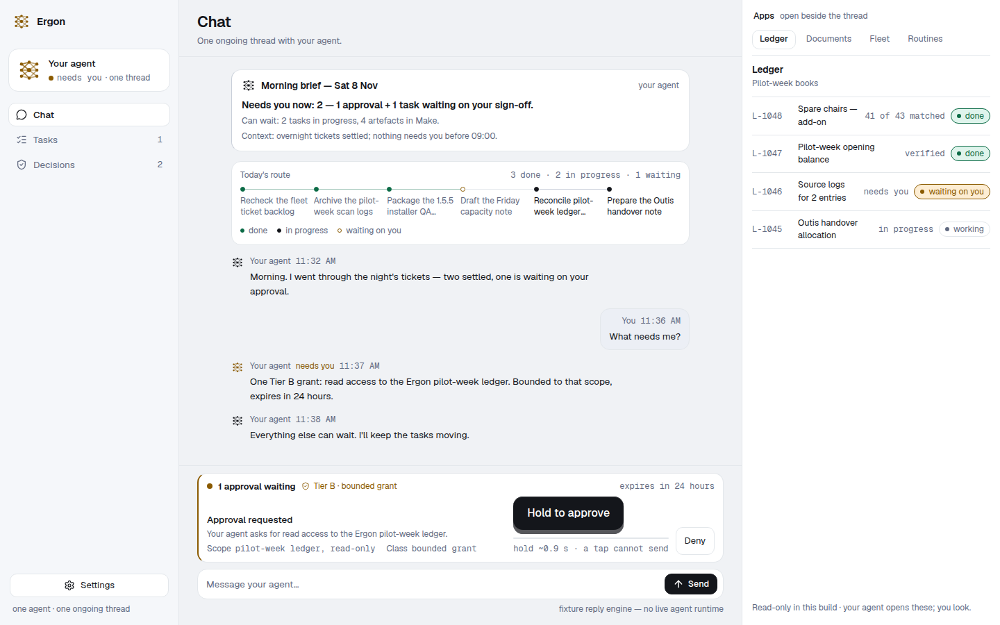
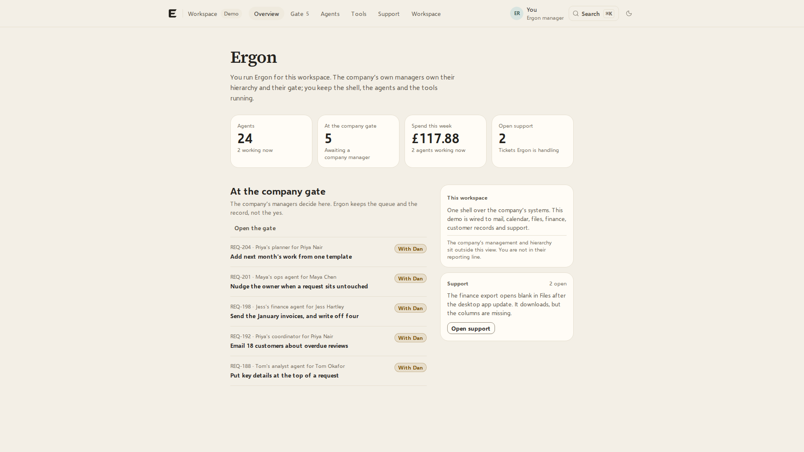
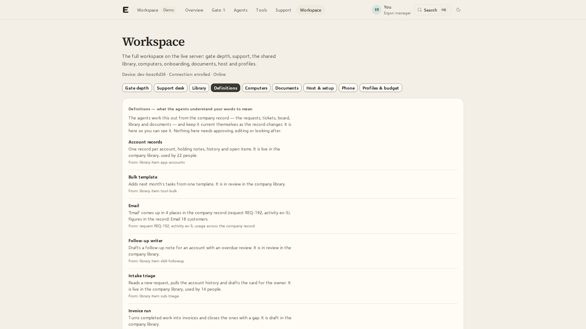
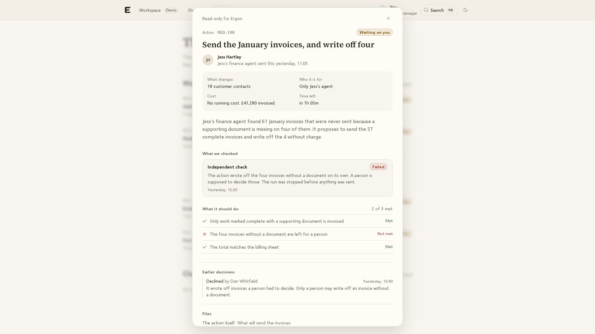

Ergon — a product in development, designed and built by Cayleb Alvarez-James. Checked against the build, 16 November 2026.
Every employee gets an agent. Nothing consequential happens without a person.
A personal AI agent for every employee, on one shared company system. The agent learns how each person works and takes the busywork off their plate — and anything that sends, spends or changes a record waits for a person’s approval.
Status — built product, in developmentCustomers — none, and this page will not pretend otherwiseEvidence — the build record, cited throughout
The product, in pictures
Scroll — the product explains itself

brief." loading="lazy" decoding="async">

one view." loading="lazy" decoding="async">

own glossary." loading="lazy" decoding="async">
Screen i. The morning brief, in the current front set.
brief." loading="lazy" decoding="async">
Screen i. — the morning brief
The day starts as a brief.
What changed, what is waiting, what needs a decision — assembled by the agent before the employee has to ask.
Look forthe approval card at the bottom of the thread — hold to approve; a tap cannot send.
one view." loading="lazy" decoding="async">
Screen ii. — the overview
The whole company, one view.
Every agent works from the same company record. The gate queue, the spend and the open tickets sit in one place.
Look forthe gate queue — five proposals waiting on a company manager, not on the agent.
own glossary." loading="lazy" decoding="async">
Screen iii. — the definitions
It keeps its own glossary.
The agent maintains the company’s definitions from the company’s own data, so every agent answers the same way.
Look foreach term tied to the exact data it maps to — derived by the agent, never curated by hand.
622
automated tests passing on the current build
3 companies
simulated companies running full operations against the baseline
4 Nov 2026
the simulation programme has run since — every failure becomes a numbered defect
“Anything that sends, spends or changes a record waits for a person’s approval.”
The gate — the rule the whole product is organised around

The gate, caught doing its job. An agent proposed sending 57 invoices and writing off four. The independent check found the write-offs had no supporting document — a person’s call, not the agent’s — and the run was stopped before anything was sent. The screen is the current build, running its seeded demo company.Source: current build (completion/ergon-live), captured 16 Nov 2026
First, the problem
The busywork was never the job
Every employee loses hours to work that is not their job: chasing updates, re-typing the same information into another system, drafting the same messages, keeping the same lists current. It is the tax every company pays and nobody itemises.
A general chatbot does not fix it. It does not know the person’s role, the company’s records, or what it is allowed to touch — so it answers questions while the busywork carries on around it.
Ergon is built around that gap: an agent that knows the role, works inside the company’s own system, and stops at a human gate before anything consequential leaves the building. The agent is not a chat window bolted onto the side of the work. It is inside the work, with a person holding the one door that matters.
Second, the product
One agent per person. One system per company.
i.
It learns the role
After install, the agent watches recurring work and asks targeted questions, building a persistent model of the role and a memory of the person. Nobody maps the role in advance or keeps adjusting the agent by hand.
ii.
The morning brief
Each person starts the day with their own brief — what changed, what is waiting, and what needs a decision — assembled by the agent, not compiled by the employee.
iii.
One shared company database
Every agent works from the same company record, so what one agent learns is available to the rest, under the company’s own permissions. The suite is hosted on one machine at the company’s site.
iv.
The gate
Anything that sends, spends or changes a record is proposed by the agent and decided by a person — approve, ask for changes, or decline, with the check results shown before the decision and the reason recorded with it.
v.
Definitions the agent keeps itself
The agent maintains the company’s own definitions — what its words mean in its records — derived from the company’s data and kept current as the data changes, so every agent answers consistently. Nobody curates a glossary by hand.
vi.
A shared library
A skill one agent proves can enter the company library; other agents earn it through the same evaluation and review, with permissions scoped and reversible — so capability compounds across the company.
vii.
Escalation-only tickets
An agent raises a ticket only after it has tried the fix itself and reached a blocker, and the ticket shows what it tried. People see only what genuinely needs hands.
Third, the shape of it
A formula, not a box of apps
Ergon is a template plus creation blueprints. Each company gets its own separate private repository holding its full personalised suite — its apps, skills, tools and each employee’s agent — kept apart from the platform repository and from every other company.
Agents customise themselves through conversation under a staging-to-promotion gate: a change is staged, evaluated and reviewed, and only then promoted. Access is controlled at the hosting layer, behind a zero-trust gate — employees sign in through the company’s own identity provider, and there are no Ergon-issued employee keys and no Ergon passwords.
A capability is earned the same way: installed, observed, modelled, proposed, evaluated and reviewed — then used. Personalisation is built into the harness, not bolted on.
Fourth, the record
Ergon, in figures
The measured record, as documented in the build — checked 16 November 2026.
Measure
Figure
Basis
Automated tests passing
622
The résumé’s locked record for the current build
Simulated companies
3
Meridian Van Line · Bayside Dental · Northgate LawDetailed employee personas running full operations against the baseline
Simulation programme
since 4 Nov 2026
Every failure becomes a numbered defect, fixed by one side and checked by another
Hosting
One machine
On site at the company; one shared company database
Access
Company IdP
Zero-trust gate at the hosting layer; no Ergon-issued keys, no Ergon passwords
Definitions layer
Agent-maintained
Derived from the company’s own dataBuild: completion/ergon-definitions @ d08f2ac
Platform read at
f0a5478
cayleb-james2008/ergon, branch completion/ergon-live · 15 November 2026
Where a number comes from the résumé’s locked record rather than the repository, the table says so.
Finally, the honest part
Where it stands
Ergon is built and verified as a working product build: the current front set runs as a live demo on the résumé page, and 622 automated tests pass. A simulation programme has run since 4 November 2026 — three simulated companies with detailed employee personas run full operations against the baseline, and every failure becomes a numbered defect, fixed by one side and checked by another.
Ergon is a product in development, designed and built by Cayleb. It is not a launched company and it has no customers. RHL is a proposed first deployment only: the concept was discussed there and drew interest, but RHL has not authorised or implemented an AI integration, and no Ergon infrastructure is in production there.
That is the whole pitch: a working product, a gate that has already stopped a real mistake, and a record that says exactly what is and is not proven.
Don’t take the pitch’s word for it. Run the demo.
The current front set runs in the browser — the morning brief, the thread, and the approval card that holds the decision. It is the same build this page describes.